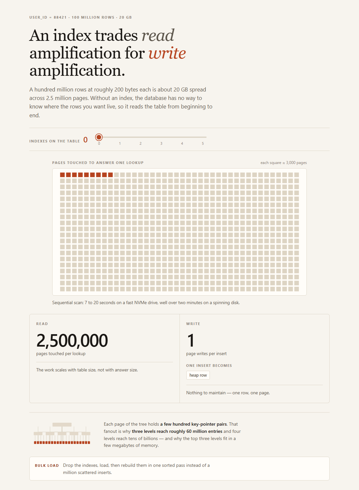

Writes are rare and cheap; reads dominate the budget. The mapping is immutable, a code is written once and never updated — so the read path can be a pure lookup with no invalidation protocol and no cache coherence problem.
Read:write runs about 100:1 to 1000:1. Optimise the redirect to the exclusion of everything else, and make that path physically short: the same edge node, one shard, one row.
